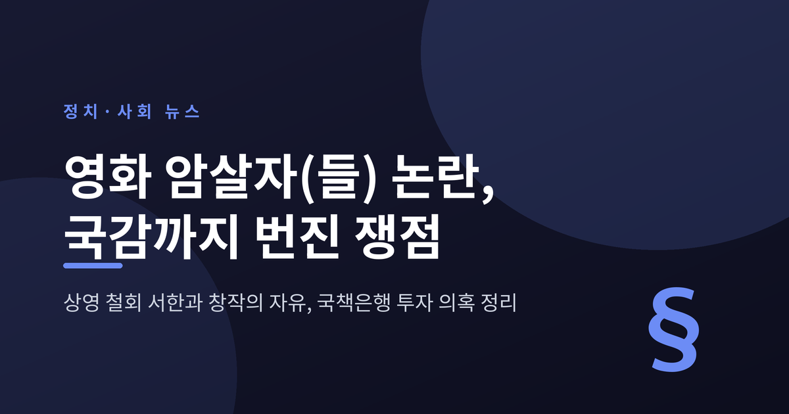
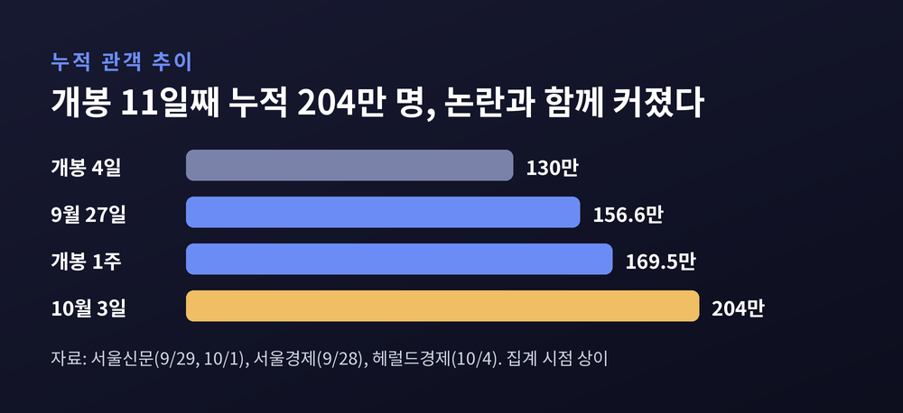
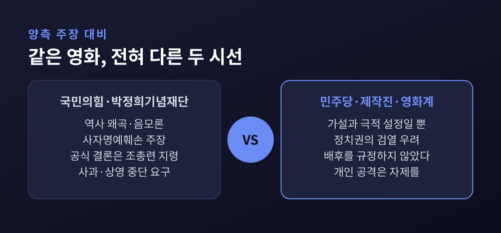
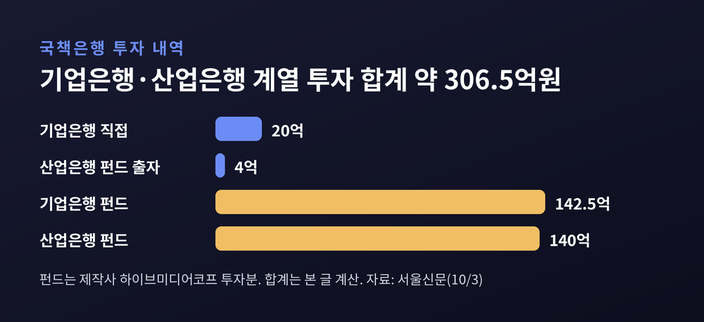
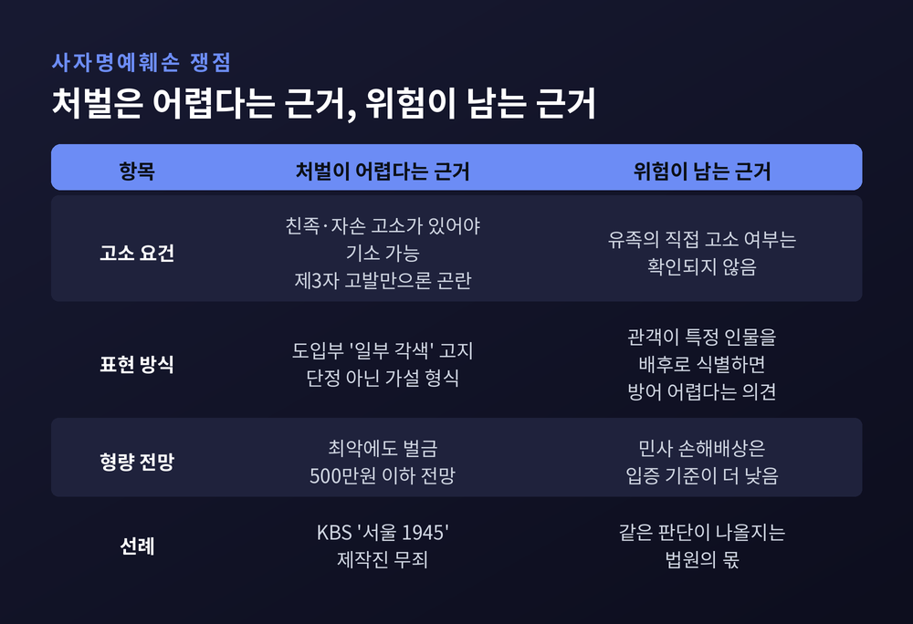
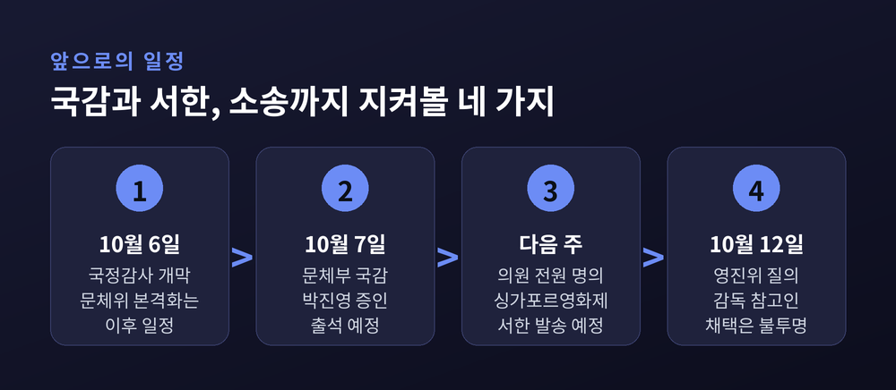

육영수 여사 피격 사건을 다룬 영화 '암살자(들)'이 개봉 2주 차에 접어들며 정치권 전면으로 올라왔습니다. 이번 글에서는 국민의힘의 상영 철회 서한과 문화체육관광위원회 국정감사 공방, 국책은행 투자와 평점 조작 의혹까지 사실관계를 순서대로 정리해 보겠습니다. 국민의힘과 더불어민주당, 영화계의 주장은 가능한 한 나란히 적었습니다.
세 줄 요약
'암살자(들)'은 허진호 감독이 만든 미스터리극으로, 유해진·박해일·이민호가 출연합니다. 1974년 8월 15일 광복절 기념식에서 일어난 육영수 여사 피격 사건의 의문점을 추적하는 이야기입니다. 개봉 4일 만에 130만 명, 9월 27일 기준 누적 156만6222명을 기록하며 5일 연속 1위를 지켰습니다. 10월 3일에는 204만 명을 넘어 올해 개봉작 가운데 200만 관객을 돌파한 아홉 번째 영화가 됐습니다(헤럴드경제).

논란의 불씨는 개봉 첫 주말 무렵 나온 장동혁 국민의힘 대표의 발언입니다. 장 대표는 "노무현 대통령을 건드리면 줄줄이 고소·고발 당한다. 박정희 대통령 모욕은 '표현의 자유'다"라고 비판했습니다. 주진우 의원은 "유족의 가슴을 미어지게 하는 패륜적 범죄"라며 사자명예훼손 가능성을 제기했습니다.
이후 흐름은 빠르게 번졌습니다. 9월 29일 문체위 전체회의에서 국민의힘이 허진호 감독을 국감 참고인으로 요구했지만 민주당이 반대해 무산됐습니다. 그 직후 이종배 전 시의원이 감독과 제작진을 명예훼손 혐의로 고발했습니다. 10월 4일에는 보수단체 약 50명이 배우 유해진 씨의 서울 성북구 자택 앞에서 집회를 열었고, 10월 5일 장 대표는 의원 약 20명과 충북 옥천의 육영수 여사 생가를 찾았습니다.
예전엔 영화평 지면에서 오가던 논쟁이었습니다. 지금은 국정감사와 국제영화제, 경찰 수사까지 얽힌 정치 사안이 됐습니다.
이 사안이 영화 한 편의 평가를 넘어서는 이유는 두 가지입니다. 하나는 현대사의 민감한 사건이 상업영화로 재현될 때 어디까지 허용되느냐는 질문입니다. 다른 하나는 정치권이 상영 자체에 관여해도 되느냐는 질문입니다.
한국일보는 문화면 분석에서 육영수 피격이 보수 진영에서 오래 보호받아 온 서사라는 점이 반발의 강도를 키웠다고 짚었습니다. 같은 신문 사설은 표현의 자유가 무한정 허용되지는 않는다고 하면서도, 정치권의 과도한 개입과 제작진 공격은 자제해야 한다고 양쪽을 함께 지적했습니다.
그래서 이번 논란은 여야 구도만으로 설명되지 않습니다. 개혁신당 이기인 비상대책위원장은 "확인된 과오 비판과 확인되지 않은 범죄 덧씌우기는 다르다"고 했고, 메가박스 굿즈 티켓에 총탄 자국 디자인이 쓰인 점을 두고는 "누군가에게는 평생 지워지지 않는 참극이 어떻게 다른 누군가에게는 기발한 판촉 아이디어가 되느냐"고 비판했습니다.
사건의 뼈대는 이렇습니다. 1974년 8월 15일 재일교포 문세광이 박정희 대통령을 저격했고, 총탄에 맞은 육영수 여사가 숨졌습니다. 문세광은 4개월 뒤인 12월 20일 사형이 집행됐습니다. 당시 수사당국은 문세광이 조총련 지령과 범행 자금을 받았다고 자백했다고 발표했습니다. 국민의힘이 말하는 "공식 결론"이 이것입니다.
다만 다른 기록도 있습니다. 한국일보가 소개한 미국 외교문서에서 주한 미 대사관은 한국 수사가 "문세광의 자백에 근거"하며 그 자백이 "독립적 정보원들에 의해 확인되지 않았다"고 보고했습니다. 일본 경찰은 문세광과 조총련 인사의 접촉은 인정하되 이 사건과의 연관성은 밝혀내지 못했다고 결론 냈습니다. 신속한 재판과 사형 집행이 겹치면서 수사 조작 의혹이 꾸준히 제기돼 왔고, 역사학자들은 현장 감식 자료와 중앙정보부·경호실 기록 공개를 제안하고 있습니다.
여기서 균형을 잡을 필요가 있습니다. 공식 수사 결과가 있다는 사실과 그 결과에 의문을 품는 시각이 있다는 사실은 모두 기록으로 확인됩니다. 영화가 박정희 전 대통령이나 중앙정보부를 배후로 '암시'했는지에 대한 해석은 엇갈립니다. 제작진은 "특정 인물을 배후로 규정하고 있지 않으며 영화 속 가설과 극적 설정을 역사적 사실로 제시하지 않는다"고 밝혔습니다. 박정희대통령기념재단과 국민의힘은 그 설정 자체가 음모론이라고 맞서고, 재단은 총성을 5발이 아닌 6발로 그린 점까지 문제 삼았습니다.

가장 최근에 불거진 대목은 해외 영화제입니다. '암살자(들)'이 싱가포르국제영화제 개막작으로 선정되자, 국민의힘은 선정 철회를 요청하는 서한을 보내기로 했습니다. 처음에는 주진우 의원 개인 명의였으나 동참하는 의원이 늘어 의원 전원 명의로 확대됐습니다. 발송은 다음 주로 예정돼 있습니다. 최보윤 수석대변인은 "자발적으로 동참하겠다는 의원들이 많아서 의견을 수렴해서 원내에서 진행한다"고 설명했습니다.
장 대표는 생가 회견에서 "역사전쟁, 문화전쟁 그 맨 앞에 서서 싸우겠다"며 제작·배급사의 공식 사과와 판촉물 전량 폐기를 요구했습니다. 박덕흠 국회부의장은 "영화적 상상력이라는 말 뒤에 비겁하게 숨지 말고 정중히 사과하라"고 말했습니다.
민주당의 반응은 정반대였습니다. 전은수 원내대변인은 "국제영화제 상영 여부에까지 관여하는 '영화 틀어막기 정당'인가"라며 박근혜 정부 시절 문화예술계 블랙리스트를 언급했습니다. 서영교 의원은 영화를 보고 "완성도가 높은 영화를 마치 역사를 왜곡한 양 떠들어대는 것"이라고 말했고, 최민희 최고위원은 "영화는 픽션"이라고 했습니다.
국민의힘은 이를 검열이 아니라 역사 왜곡에 대한 정당한 문제 제기로 봅니다. 민주당은 정치권이 무엇을 상영할지 정하는 일 자체가 검열이라고 봅니다. 두 시각의 간격이 이번 논란의 핵심입니다.
영화 외부의 의혹도 겹쳤습니다. 서울신문 보도에 따르면 기업은행은 영화에 직접 20억원을 투자했고, 산업은행은 펀드를 통해 4억원을 출자했습니다. 제작사 하이브미디어코프에는 기업은행 펀드 142억5천만원과 산업은행 펀드 140억원이 들어갔습니다. 모두 더하면 약 306억5천만원입니다(합산은 본 글의 계산입니다).
주진우 의원은 외부 요청이나 개입이 있었는지 확인하겠다며 투자 결정 시기와 임원 인사 배경 점검, 투자금 회수와 경위 수사를 촉구했습니다. 은행 측은 정반대로 설명합니다. 기업은행은 "전담 부서의 투자 심사를 거쳐 제작사 역량과 사업성을 검토한 정상적 결정"이라고 했고, 산업은행은 "펀드 운용사가 독립적으로 투자 결정"을 했다고 밝혔습니다. 외압을 뒷받침하는 증거는 현재까지 제시되지 않았습니다.

평점 문제도 있습니다. 네이버는 10월 1일 경찰에 수사를 의뢰했습니다. 공감·비공감 중복 등록 오류가 발생한 기간에 이 영화 관람평에서 매크로 같은 기계적 어뷰징 정황이 확인됐다는 이유입니다. 관람평 기본 정렬은 공감순에서 최신순으로 바뀌었고, 영화 검색 홈에는 전문가 평점만 노출됩니다. 조작 규모는 기사에 나와 있지 않아 확인되지 않았습니다. 별점 1점을 준 관객이 모두 조작은 아니라는 반론도 함께 존재합니다.
법적 공방은 가장 현실적인 변수입니다. 형사 쟁점은 사자명예훼손인데, 이 죄는 친족이나 자손의 고소가 있어야 기소할 수 있다고 문화일보가 설명했습니다. 이종배 전 시의원의 고발은 제3자 고발이어서 그것만으로는 수사가 성립하기 어렵다는 지적이 나옵니다.
법조계에서는 처벌 가능성을 낮게 보는 쪽이 우세합니다. 영화 도입부에 "등장인물과 구체적 사건은 일부 각색됐다"는 고지가 있고, 배후설이 단정이 아닌 가설 형식으로 표현됐다는 점 때문입니다. 로톡뉴스는 법조계가 본 처벌 확률을 '15%'로 소개했고, 최악의 경우에도 벌금 500만원 이하가 될 가능성이 크다고 전했습니다. KBS 드라마 '서울 1945' 제작진이 이승만 전 대통령 명예훼손 혐의에서 무죄를 받은 선례도 거론됩니다.
반대 의견도 있습니다. 문화일보에 실린 변호사 의견은 배우자가 정치적 목적으로 해를 가한 것처럼 그려지면 인격권 문제가 된다고 보았고, 전직 고등법원 판사는 관객이 특정 인물을 배후로 식별한다면 '예술적 상상'만으로 방어하기 어렵다고 말했습니다. 민사 손해배상은 형사보다 입증 기준이 낮아 별개의 위험 요소로 꼽힙니다. 박정희대통령기념재단은 사과나 상영 중단이 없으면 가처분을 신청하겠다고 예고했지만, 실제 신청 여부는 확인되지 않았습니다.

논란이 길어지면서 현장의 목소리도 커졌습니다. 보수단체는 10월 4일 유해진 씨 자택 앞에서 집회를 열었고, 한국일보 사설은 집회가 이달 내내 예고됐으며 유 씨의 광고 모델 업체까지 공격 대상이 됐다고 지적했습니다. 허진호 감독과 출연진은 안전 우려로 부산국제영화제 참석을 취소했고, 제작사는 10월 7일 야외무대 행사와 개봉 2주 차 무대인사를 전면 취소했습니다.
영화감독조합은 "창작자는 비판받을 수 있지만, 그 비판이 창작자 개인의 삶과 생업을 무너뜨리는 방식으로 이어져서는 안 된다"는 입장문을 냈습니다. 영화제작가협회 부회장도 비슷한 취지로 위축 효과를 경고했습니다.
한계도 분명히 해 두겠습니다. 국민의힘 지도부가 개인 신상 공격이나 집회를 직접 주도했다는 근거는 이번 조사에서 확인하지 못했습니다. 비판의 자유와 위협의 경계를 구분하는 일은 정치 진영과 별개로 필요하다는 것이 영화계의 주장입니다.

10월 6일 국정감사가 시작됩니다. 첫날 최대 쟁점은 조희대 대법원장 증인 출석을 둘러싼 법제사법위 공방이어서, 영화 논란은 문체위 일정에서 본격화될 전망입니다. 10월 7일에는 문화체육관광부 국감이 열리고, 국민의힘은 10월 12일 영화진흥위원회 질의 때 허진호 감독을 참고인으로 부르는 방안을 검토하고 있습니다. 같은 날 박정희대통령기념재단 최대석 이사장이 참고인으로 출석할 예정이라는 보도도 있었습니다. 다만 참고인 채택은 여야 합의가 필요해 불투명합니다.
지켜볼 대목은 네 가지입니다.
끝으로 한 마디만 더 드리겠습니다.
이번 논란에서 사실로 확인되는 것은 많지 않습니다. 1974년의 공식 수사 결과가 있고, 그에 대한 의문도 오래 이어져 왔으며, 영화가 그 틈에 이야기를 놓았다는 정도입니다. 나머지는 해석의 몫이고, 해석은 진영에 따라 갈립니다.
"영화는 상상할 수 있지만, 상상이 기록을 대신할 수는 없습니다."
비판할 권리와 만들 권리는 서로를 지울 때가 아니라 서로를 견딜 때 지켜집니다. 어느 쪽 주장이든 근거를 하나씩 확인하며 지켜보시길 권합니다.